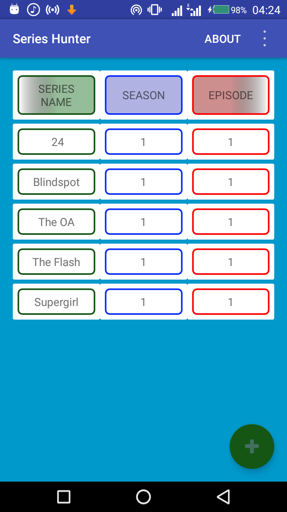
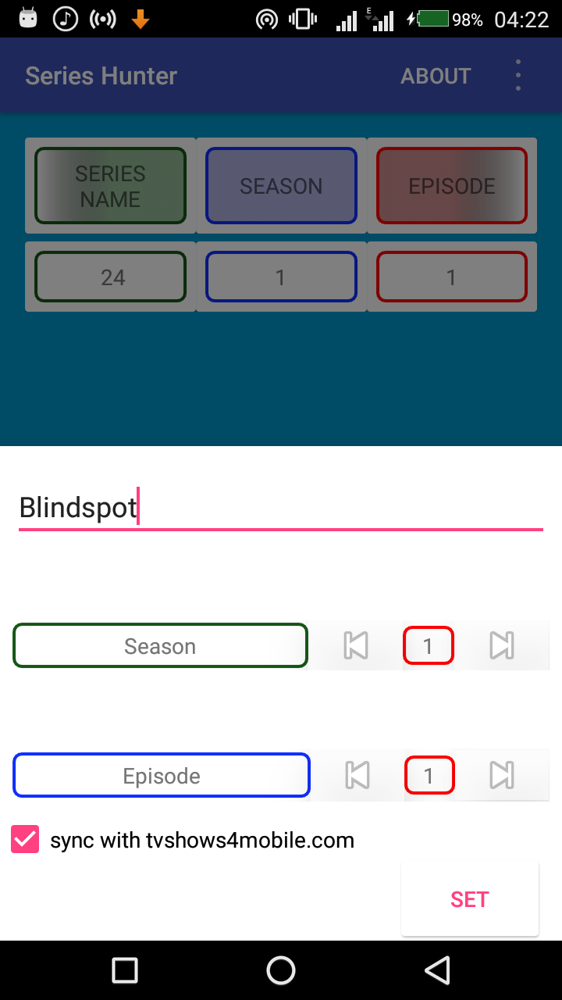
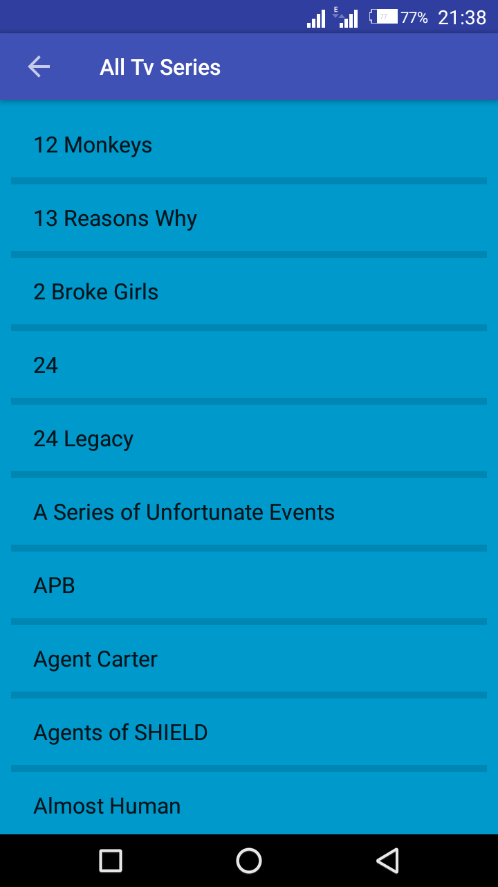
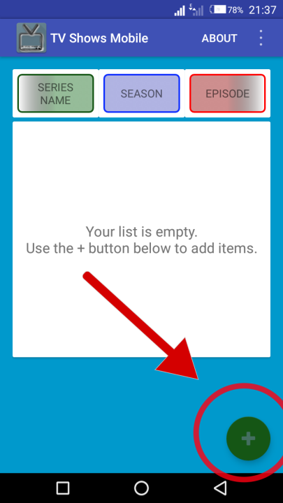
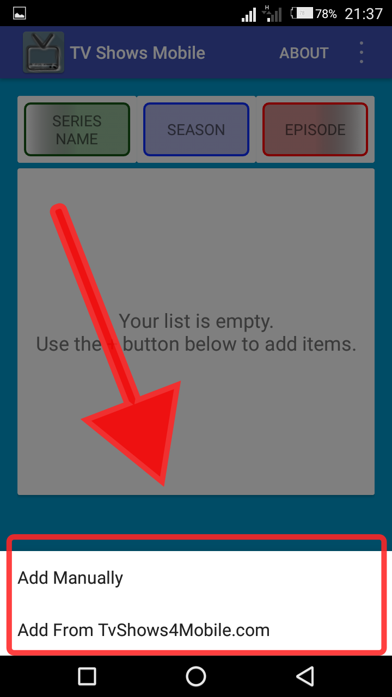
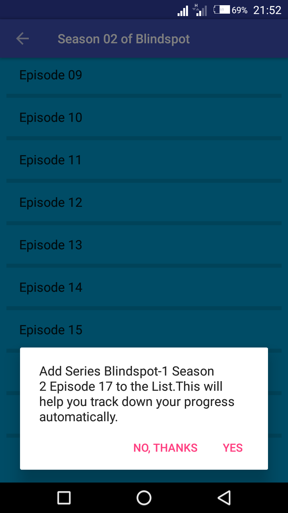
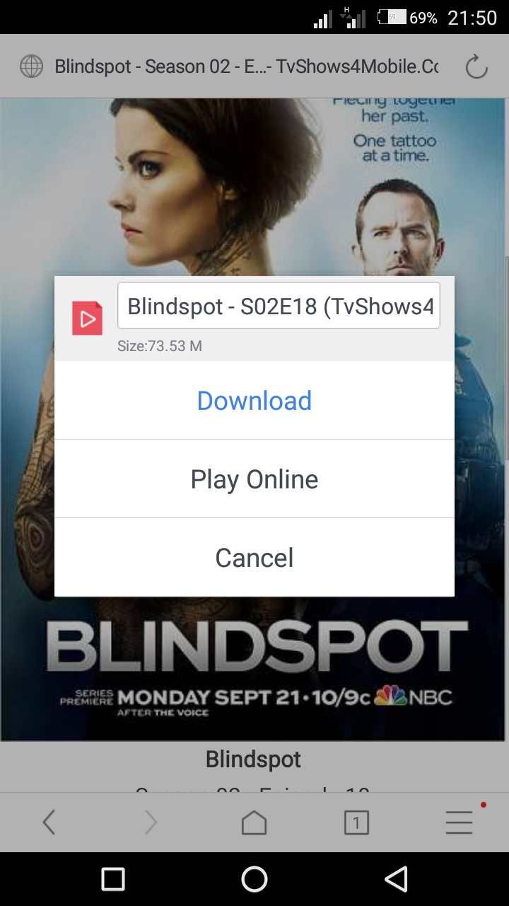
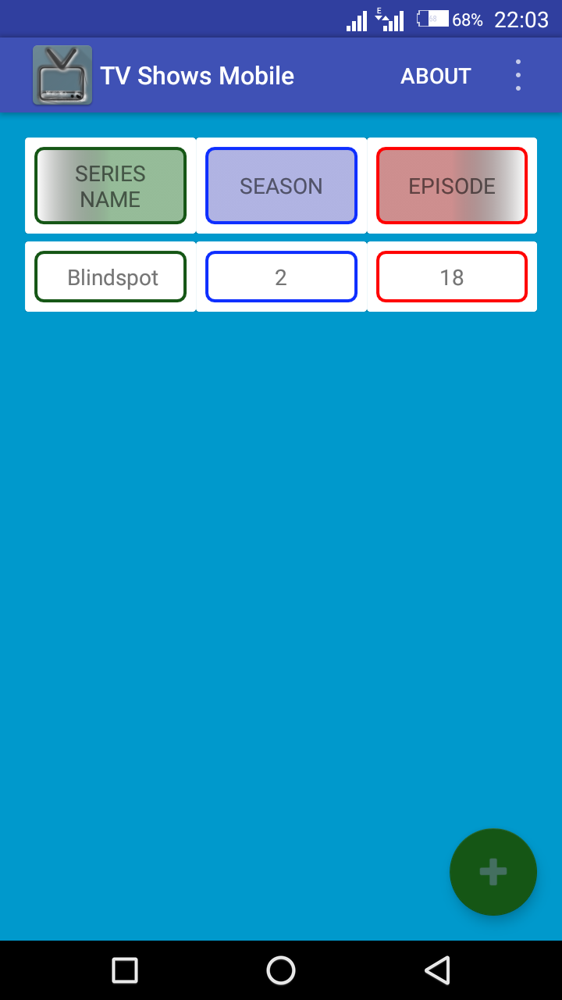

TV Show Mobile App Tutorial |



TV Shows Mobile is the app that I designed to ease people like me watching movies at tvshows4mobile.com track down new episode and seasons
of their favorite tv shows. You can download it on google play store from here
|  |
After downloading 'TV shows Mobile' from the play store for the first time, your record is usually empty. So look at the bottom right edge of the screen and press the add bottom (represented by a '+' buttom sign) to add a show. |
|  |
From the dialog screen, you should choose how you want to add the tv-show. |
|
"Manual add" will pop out screen like this for you, enter the name of the Tv-shows at the top, then the season and episode by using the increase or decrase bottom . |
|  |
If the tv-show you want is available at tvshows4mobile.com, then you can go ahead to add by using the "Add from TvShows4Mobile.com" buttom. Choose the tv-show you want to track and choose "Continue and set Values from server" option, select the season and also the episode. Confrim "Yes".
|
|  |
When next you download the tvshow from your mobile browser(UC browser) and the season or episode downloaded is higher than the one
in the "Tv Show Mobile" app (i.e it is a new episode or season), the "TV Show Mobile" app will update itself with the new information. |
 |
If you have any question or feature request, contact me through abdullahidhako@gmail.com